ECG and smartwatch CNNs:original channels and visible tensor fits
Abstract
Complete strided residual CNNs learn from genuine ECG200 and six-channel BasicMotions records. Explicit fitting-only normalization,class-weighted CE,SGD references,all42 Adam updates and every held-out source-class diagnostic reveal both behavior and failures.
Source example: examples/cpp/source/nn/1_convolutional_neural_networks/1.9_1d_convolutions/ecg_sensor_cnn.cpp.
The method
Preserve original source records,channels and class order. Compute normalization and class weights only on fitting tensors,then train three strided residual stages with an explicit weighted objective. Restore paired learned/channel state for raw-signal-only prediction,and compare fixed SGD references with full confusion,balanced recall,macroF1 and tie-aware binary AUROC.
The concept diagram below is drawn by dm::graphics::Diagram. Its editable C++
source is the complete block below; regeneration uses the same datamunge toolchain
as the numerical examples. Exports consume the saved local SVG.
#include <dm/dm.hpp>
int main() {
std::filesystem::create_directories("build");
dm::graphics::Diagram diagram;
diagram.node("n0", {0.0, 0}, "Original ECG\n and six-axis records");
diagram.node("n1", {5.2, 0}, "Strided residual\n tensor stages");
diagram.node("n2", {10.4, 0}, "All source classes\n and held-out checks");
diagram.edge("n0", "n1").edge("n1", "n2");
diagram.save_svg("build/ecg_sensor_cnn_concept.svg");
}
Executed tensor architecture
This figure executes the inference configuration shown in the code, using a zero-valued shape probe without fitting or loading a checkpoint. Named stage boundaries group whole subgraphs where available; other nodes retain functional-layer detail. Exact batch-inclusive shapes and reachable parameter totals come from the trace. Shared linear scales map spatial dimensions and channel counts to blocks; the one-pixel visibility floor is disclosed in the legend. Labels use compact monospace text, rotate counterclockwise and sit beside their own glyphs. Arrows flow left to right; wide diagrams scroll at native size on the website.
#include <dm/dm.hpp>
int main() {
namespace n = dm::nn;
namespace m = n::models;
n::set_num_threads(2);
std::filesystem::create_directories("build");
n::ParameterStore p(17), state(18);
const m::SensorConfig config{1, 2, 8};
n::Module architecture_model(
[&](const n::Tensor& image) { return m::SensorCnn(p, state, image, config).logits; },
"ECG and smartwatch CNNs:original channels and visible tensor fits");
n::ModelPlotOptions options;
options.style = n::ModelPlotStyle::Flow;
options.detail = n::ModelPlotDetail::Blocks;
options.labels = {.type = n::ModelPlotLabel::NameAndShape, .size = 12, .wrap = 24};
options.spacing = {.layer = 24, .lane = 12, .label = 8, .margin = 20};
options.sizing.spatial_size = 96;
options.sizing.channel_size = 42;
options.sizing.minimum_extent = 1;
options.opacity = .8;
const auto diagram = architecture_model.plot(n::zeros({1, 96, 1}), options);
diagram.save_svg("build/ecg_sensor_cnn_architecture.svg");
std::print(
"{} displayed nodes; {} reachable learned values.\n",
diagram.nodes().size(),
diagram.parameter_count());
}22 displayed nodes; 8154 reachable learned values.
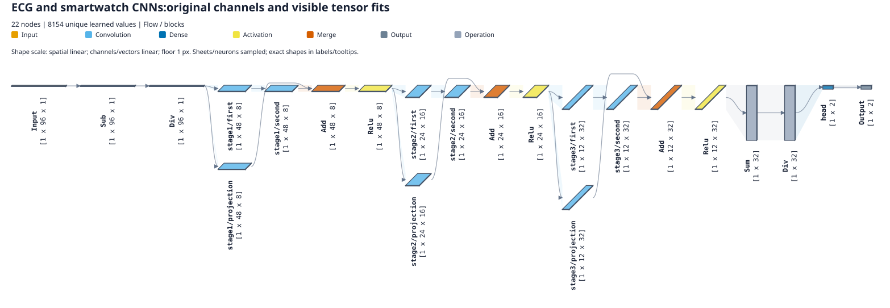
Original ECG and six-channel smartwatch observations
Retain the complete official100-record ECG200 and40-record BasicMotions test sets. Seed407 shuffles each official training class and holds rounded20% for validation:ECG80fit/20val and BasicMotions32fit/8val. Original source-record IDs remain disjoint,but there are no verified patient/participant holdouts. ECG has96 samples and one channel;the original -1/+1 class codes become0/1. Do not guess a clinical meaning for either code. These are released source values,not a claim of unprocessed millivolt sensor acquisition.
BasicMotions has100 samples,six channels:accelerometer x/y/z then gyroscope x/y/z. Original TS class inventory order is Standing,Running,Walking,Badminton, which becomes0/1/2/3. Preserve this order in every metric and confusion plot. Fitting-only channel population mean/std and class weights N/(K*count) are tensor reductions,rounded once to Float32. Test values never estimate them.
Pinned official archives and exact original values/IDs are retained in the source manifests. An independent NumPy validation reads **different original archive formats**—TXT for ECG/GunPoint and six separate ARFF channels for BasicMotions—and verifies every value,label and ID against prepared TS ingress. This separate source oracle is never used for report fitting or preprocessing.
#include <dm/dm.hpp>
int main() {
const std::filesystem::path cache = dm::datasets::data_home();
dm::datasets::prepare_example_data("signals", cache);
}#include <dm/dm.hpp>
int main() {
namespace n = dm::nn;
namespace m = n::models;
n::set_num_threads(2);
std::filesystem::path cache;
if (const auto *p = std::getenv("DATAMUNGE_DATA_DIR"))
cache = p;
else if (const auto *p = std::getenv("XDG_CACHE_HOME"))
cache = std::filesystem::path(p) / "datamunge/datasets";
else
cache = std::filesystem::path(std::getenv("HOME")) / ".cache/datamunge/datasets";
std::filesystem::path root = cache / "ecg_sensor";
if (const auto *p = std::getenv("DATAMUNGE_SENSOR_DIR"))
root = p;
else {
dm::datasets::prepare_example_data("signals", cache.string());
root = cache / "ecg_sensor";
}
const auto ecg = m::LoadSensor(root / "ECG200");
const auto motion = m::LoadSensor(root / "BasicMotions");
for (const auto &name : {"ECG200", "BasicMotions"}) {
std::print(
"\n| dataset | split | records | original class counts |\n|---|---|---:|---|\n");
const auto d = m::LoadSensor(root / name);
for (int i = 0; i < 3; ++i)
std::print("| {} | {} | {} | {} |\n", name,
i == 0 ? "fitting"
: i == 1 ? "validation"
: "test",
d.pools[i].size(),
n::sum(n::one_hot(d.pools[i].labels, d.config.classes), {0}));
std::print("{} fitting channel mean {},std {},class weights {}.\n", name, d.mean, d.stddev,
d.weights);
}
auto a = dm::graphics::RPlot::create(), b = dm::graphics::RPlot::create();
const auto time = n::arange(0, 96).to_vector<double>();
const auto labels = ecg.pools[0].labels.to_vector<int>();
int shown[2] = {0, 0};
for (int row = 0; row < ecg.pools[0].size(); ++row) {
const int c = labels[row];
if (shown[c] >= 2)
continue;
a.lines(time, n::select(ecg.pools[0].signals, 0, row).reshape({96}).to_vector<double>(),
std::string(c ? "code+1 " : "code-1 ") + std::to_string(++shown[c]),
c ? dm::graphics::RGB{220, 38, 38} : dm::graphics::RGB{37, 99, 235});
}
a.title("Four genuine fitting ECG records")
.x_label("released source sample index")
.y_label("original released value");
const auto observed = n::select(motion.pools[0].signals, 0, 0);
const std::array<dm::graphics::RGB, 6> colors = {{{37, 99, 235},
{220, 38, 38},
{22, 163, 74},
{147, 51, 234},
{217, 119, 6},
{8, 145, 178}}};
for (int c = 0; c < 6; ++c)
b.lines(n::arange(0, 100).to_vector<double>(),
n::select(observed, 1, c).to_vector<double>(), "channel" + std::to_string(c),
colors[c]);
b.title("One actual six-channel motion record")
.x_label("original sample index")
.y_label("released channel value");
auto examples = dm::graphics::RLayout::create(1, 2);
examples.add(a).add(b).size(1100, 500).fit_panels().save_svg(
"build/ecg_sensor_cnn_inputs.svg");
std::filesystem::create_directories("figures");
std::filesystem::copy_file("build/ecg_sensor_cnn_inputs.svg",
"figures/ecg_sensor_cnn_inputs.svg",
std::filesystem::copy_options::overwrite_existing);
const auto e =
n::concat({ecg.pools[0].signals, ecg.pools[1].signals, ecg.pools[2].signals}, 0)
.reshape({200, 96});
const auto s =
n::concat({motion.pools[0].signals, motion.pools[1].signals, motion.pools[2].signals}, 0)
.reshape({80, 600});
a = n::plot_tensor_map(n::reverse(e, {0}), n::min(e).item(), n::max(e).item());
b = n::plot_tensor_map(n::reverse(s, {0}), n::min(s).item(), n::max(s).item());
a.title("Every200 original ECG observations")
.x_label("original temporal sample")
.y_label("80fit /20val /100test rows");
b.title("Every80 original six-channel records")
.x_label("time-major interleaved6channels")
.y_label("32fit /8val /40test rows");
auto all = dm::graphics::RLayout::create(1, 2);
all.add(a).add(b).size(1100, 500).fit_panels().save_svg("build/ecg_sensor_cnn_data.svg");
}| dataset | split | records | original class counts |
|---|---|---|---|
| ECG200 | fitting | 80 | float32[2] [25, 55] |
| ECG200 | validation | 20 | float32[2] [6, 14] |
| ECG200 | test | 100 | float32[2] [36, 64] |
ECG200 fitting channel mean float32[1] [4.1427e-10],std float32[1] [0.994778],class weights float32[2] [1.6, 0.727273].
| dataset | split | records | original class counts |
|---|---|---|---|
| BasicMotions | fitting | 32 | float32[4] [8, 8, 8, 8] |
| BasicMotions | validation | 8 | float32[4] [2, 2, 2, 2] |
| BasicMotions | test | 40 | float32[4] [10, 10, 10, 10] |
BasicMotions fitting channel mean float32[6] [2.68183, -1.29699, -1.10194, -0.00340496, -0.01081, -0.0741075],std float32[6] [7.26568, 6.96112, 3.63202, 2.21384, 1.86153, 3.6122],class weights float32[4] [1, 1, 1, 1].

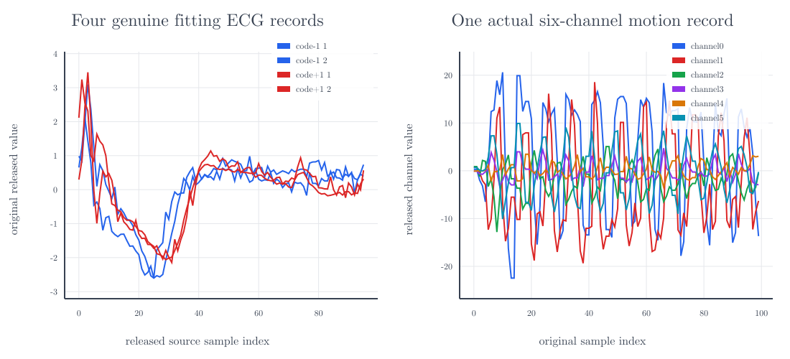
Weighted CE uses the record count denominator
Each record contributes its source class weight times negative log-softmax. Average over N original rows,not the sum of selected weights. The weights N/(K*class_count) come only from fitting labels. Stable log-softmax retains large finite logits. Class weighting enters the training objective and is absent from raw-signal inference and the unweighted evaluation NLL.
Binary source-class0 AUROC counts a positive/negative pair correct when its margin logit0-logit1 is larger,with half credit for exact ties. The declared .8/.8/.2/.1 score fixture with labels0/1/0/1 has AUROC.625. For multiclass BasicMotions,the binary auc0 field is unused;report it as unavailable.
#include <dm/dm.hpp>
int main() {
namespace n = dm::nn;
namespace m = n::models;
const auto z = n::tensor({1000., 999., -2., 1.}, {2, 2}).requires_grad_();
const auto labels = n::tensor({0, 1}).to(n::DType::Int32);
const auto weights = n::tensor({2., .5});
const auto loss = m::SensorCE(z, labels, weights, 2);
const auto gradient = n::grad(loss, {z})[0];
const auto expected = (n::softmax(z, 1) - n::one_hot(labels, 2)) *
n::gather(weights, labels, 0).reshape({2, 1}) / 2.;
const auto scores = n::tensor({.8, .8, .2, .1}).to(n::DType::Float64);
const auto truth = n::tensor({0, 1, 0, 1}).to(n::DType::Int32);
const auto positive = n::equal(truth, 0.);
const auto pairs =
n::logical_and(n::expand_dims(positive, 1), n::expand_dims(n::logical_not(positive), 0));
const auto a = n::expand_dims(scores, 1);
const auto b = n::expand_dims(scores, 0);
const auto credit = n::where(
pairs,
n::greater(a, b).to(n::DType::Float64) + .5 * n::equal(a, b).to(n::DType::Float64), 0.);
std::print("Weighted raw-row CE {:.6f};every analytic adjoint max error {:.3g};tie-aware "
"sourceclass0AUROC {:.6f}.\n",
loss.item(), n::max(n::abs(gradient - expected)).item(),
m::TensorSensorAuc0(scores, truth));
auto p = n::plot_tensor_map(n::reverse(gradient, {0}), -.3, .3),
q = n::plot_tensor_map(n::reverse(credit, {0}), 0, 1);
p.title("Weighted per-record logit derivatives")
.x_label("source class index")
.y_label("record0 at bottom");
q.title("Class0-versus-rest pairwise credit")
.x_label("other source-record index")
.y_label("class0 record index0 at bottom");
auto layout = dm::graphics::RLayout::create(1, 2);
layout.add(p).add(q).size(1100, 500).fit_panels().save_svg(
"build/ecg_sensor_cnn_objective.svg");
}Weighted raw-row CE 0.325408;every analytic adjoint max error 0;tie-aware sourceclass0AUROC 0.625000.
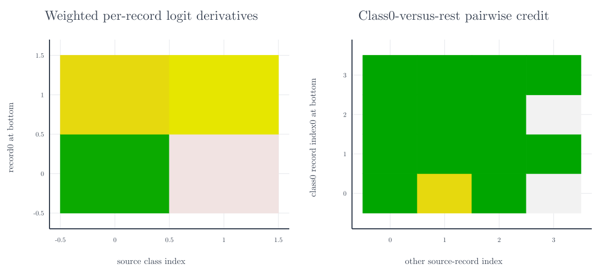
Three strided residual stages preserve every channel
Detach saved per-channel mean/std,then apply three stages. Each stage uses 5x1 stride2/ReLU followed by3x1 stride1,plus a learned1x1 stride2 skip and ReLU after addition. TensorFlow SAME determines the even/odd stride phase. Widths are base/2base/4base;global time mean feeds a linear class head. Full base64 and compact8 both retain20 learned leaves and two per-channel normalization arrays. No BN,dropout or hidden optimizer is present. Native checks execute both full graphs and every learned derivative,plus independent finite differences for all171 tiny strided multichannel coordinates.
#include <dm/dm.hpp>
int main() {
namespace n = dm::nn;
namespace m = n::models;
n::set_num_threads(2);
n::NoGradGuard guard;
std::print("| source | base | learned values | leaves | state arrays | stage1 | stage2 | "
"stage3 | head |\n|---|---:|---:|---:|---:|---|---|---|---|\n");
for (bool motion : {false, true})
for (int base : {64, 8}) {
n::ParameterStore p(613), state(617);
m::SensorConfig c{motion ? 6 : 1, motion ? 4 : 2, base};
const auto out = m::SensorCnn(p, state, n::ones({2, motion ? 100 : 96, c.channels}), c);
std::print("| {} | {} | {} | {} | {} | {} | {} | {} | {} |\n",
motion ? "BasicMotions" : "ECG200", base, p.count(), p.size(), state.size(),
out.stages[0].shape(), out.stages[1].shape(), out.stages[2].shape(),
out.logits.shape());
}
}| source | base | learned values | leaves | state arrays | stage1 | stage2 | stage3 | head |
|---|---|---|---|---|---|---|---|---|
| ECG200 | 64 | 506050 | 20 | 2 | [2, 48, 64] | [2, 24, 128] | [2, 12, 256] | [2, 2] |
| ECG200 | 8 | 8154 | 20 | 2 | [2, 48, 8] | [2, 24, 16] | [2, 12, 32] | [2, 2] |
| BasicMotions | 64 | 508484 | 20 | 2 | [2, 50, 64] | [2, 25, 128] | [2, 13, 256] | [2, 4] |
| BasicMotions | 8 | 8460 | 20 | 2 | [2, 50, 8] | [2, 25, 16] | [2, 13, 32] | [2, 4] |
Explicitly fit centroid and count references with SGD
One visible Double SGD(.5) step fits every class/time/channel centroid under summed per-coordinate class-balanced MSE,and fits add-one class-count fields under a count-regression objective. Warm both leaf arrays before constructing SGD. Save the learned centroid/count tensors. Closed-form tensor centroids are parity oracles only. Evaluation divides distances by unchanged fitting channel std;centering cancels between observations and centroids.
The standardized1NN reference stores original fitting observations and has no optimized numeric leaves. Its Float32 subtraction/division precede Double squared-distance reduction,matching the source;first fitting row wins ties. Distance and onehot scores are explicitly pseudo-logits,not probability calibration.
#include <dm/dm.hpp>
int main() {
namespace n = dm::nn;
namespace m = n::models;
n::set_num_threads(2);
std::filesystem::path cache;
if (const auto *p = std::getenv("DATAMUNGE_DATA_DIR"))
cache = p;
else if (const auto *p = std::getenv("XDG_CACHE_HOME"))
cache = std::filesystem::path(p) / "datamunge/datasets";
else
cache = std::filesystem::path(std::getenv("HOME")) / ".cache/datamunge/datasets";
std::filesystem::path root = cache / "ecg_sensor";
if (const auto *p = std::getenv("DATAMUNGE_SENSOR_DIR"))
root = p;
else {
dm::datasets::prepare_example_data("signals", cache.string());
root = cache / "ecg_sensor";
}
std::filesystem::create_directories("build");
auto layout = dm::graphics::RLayout::create(1, 2);
for (const std::string name : {"ECG200", "BasicMotions"}) {
const auto d = m::LoadSensor(root / name);
const auto &fit = d.pools[0];
const auto &test = d.pools[2];
const int k = d.config.classes;
const auto weight =
n::one_hot(fit.labels, k, 1., 0., n::DType::Float64).reshape({fit.size(), k, 1, 1});
const auto count = n::sum(weight, {0});
const auto count_target = count.reshape({k}) + 1.;
n::ParameterStore p(599, n::DType::Float64);
const auto centers = p.get("centers", {k, d.time, d.config.channels}, n::init::zeros());
const auto counts = p.get("counts", {k}, n::init::zeros());
n::OptimizerConfig options;
options.kind = n::OptimizerKind::Sgd;
n::Optimizer sgd(p, .5, options);
const auto error =
n::sum(n::sum(weight * n::square(centers -
n::expand_dims(fit.signals.to(n::DType::Float64), 1)),
{0}) /
count) +
n::sum(n::square(counts - count_target));
sgd.minimize(error);
const auto difference =
(n::expand_dims(test.signals.to(n::DType::Float64), 1) - n::expand_dims(centers, 0)) /
d.stddev.to(n::DType::Float64);
const auto logits = (-n::mean(n::square(difference), {2, 3})).to(n::DType::Float32);
const auto parity =
n::max(n::abs(logits - m::SensorReference(fit, test, d.stddev, k, true)));
if (parity.item() != 0)
return 1;
n::save_npz("build/ecg_sensor_cnn_" + name + "_sgd.npz",
{{"centers", centers.detach()}, {"counts", counts.detach()}});
std::print("{}:one visible SGD(.5) update,{} learned centroid/count values,every held-out "
"distance parity {:.3g}.\n",
name, p.count(), parity.item());
auto plot = dm::graphics::RPlot::create();
const auto time = n::arange(0, d.time).to_vector<double>();
const std::array<dm::graphics::RGB, 4> colors = {
{{37, 99, 235}, {220, 38, 38}, {22, 163, 74}, {147, 51, 234}}};
for (int c = 0; c < k; ++c)
plot.lines(time, n::select(n::select(centers, 0, c), 1, 0).to_vector<double>(),
"source class" + std::to_string(c), colors[c]);
plot.title(name + " SGD centroids,channel0")
.x_label("original temporal sample")
.y_label("class-balanced raw channel0 mean");
layout.add(plot);
}
layout.size(1100, 500).fit_panels().save_svg("build/ecg_sensor_cnn_references.svg");
}ECG200:one visible SGD(.5) update,194 learned centroid/count values,every held-out distance parity 0. BasicMotions:one visible SGD(.5) update,2404 learned centroid/count values,every held-out distance parity 0.
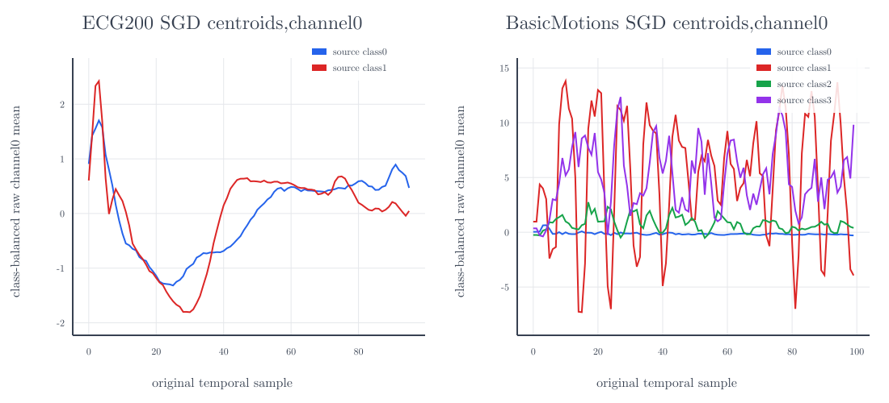
Both datasets show every weighted-loss Adam update
Initialize learned stores587 and normalization state593. Warm all20 learned leaves,then explicitly copy fitting channel mean/std before Adam(.001). Use batch order599,batch8,three epochs:30 updates for ECG80fit and12 for BasicMotions32fit,42 total. For every batch,raw signal forward,weighted CE, tensor grad and optimizer step are visible. There is no BN/dropout state. Validation weighted CE alone selects a paired learned/normalization checkpoint. Save untrained and selected held-out logits for later immutable restoration checks.
#include <dm/dm.hpp>
int main() {
namespace n = dm::nn;
namespace m = n::models;
n::set_num_threads(2);
std::filesystem::path cache;
if (const auto *p = std::getenv("DATAMUNGE_DATA_DIR"))
cache = p;
else if (const auto *p = std::getenv("XDG_CACHE_HOME"))
cache = std::filesystem::path(p) / "datamunge/datasets";
else
cache = std::filesystem::path(std::getenv("HOME")) / ".cache/datamunge/datasets";
std::filesystem::path root = cache / "ecg_sensor";
if (const auto *p = std::getenv("DATAMUNGE_SENSOR_DIR"))
root = p;
else {
dm::datasets::prepare_example_data("signals", cache.string());
root = cache / "ecg_sensor";
}
auto layout = dm::graphics::RLayout::create(1, 2);
for (const std::string name : {"ECG200", "BasicMotions"}) {
const auto d = m::LoadSensor(root / name);
const auto &fit = d.pools[0];
const auto &validation = d.pools[1];
const auto &test = d.pools[2];
n::ParameterStore p(587), state(593);
{
n::NoGradGuard guard;
m::SensorCnn(p, state, n::zeros({1, 8, d.config.channels}), d.config);
state.set("normalization/mean", d.mean);
state.set("normalization/std", d.stddev);
}
auto infer = [&](const n::Tensor &raw) {
n::NoGradGuard guard;
return m::SensorCnn(p, state, raw, d.config).logits;
};
const double initial =
m::SensorCE(infer(fit.signals), fit.labels, d.weights, d.config.classes).item();
const auto untrained = infer(test.signals);
n::OptimizerConfig options;
options.kind = n::OptimizerKind::Adam;
n::Optimizer adam(p, .001, options);
n::BatchOrder order(fit.size(), 8, 599);
std::vector<n::Tensor> history;
double best = INFINITY;
int selected = 0, updates = 0;
std::print("\n| dataset | epoch | fitting weighted CE | validation weighted CE "
"|\n|---|---:|---:|---:|\n");
for (int epoch = 1; epoch <= 3; ++epoch) {
order.begin_epoch();
auto average = n::zeros({}, n::DType::Float64);
for (;;) {
const auto rows = order.next();
if (rows.empty())
break;
const auto batch = m::SeriesRows(fit, rows);
const auto out = m::SensorCnn(p, state, batch.signals, d.config);
const auto loss = m::SensorCE(out.logits, batch.labels, d.weights, d.config.classes);
average = average + loss.detach().to(n::DType::Float64) * double(rows.size()) /
double(fit.size());
adam.step(n::grad(loss, p.parameters()));
++updates;
}
const auto val = m::SensorCE(infer(validation.signals), validation.labels, d.weights,
d.config.classes);
if (val.item() < best) {
best = val.item();
selected = epoch;
n::NamedTensors arrays;
for (std::size_t i = 0; i < p.size(); ++i)
arrays.push_back({"p/" + p.names()[i], p.parameters()[i]});
for (std::size_t i = 0; i < state.size(); ++i)
arrays.push_back({"s/" + state.names()[i], state.parameters()[i]});
n::save_npz("build/ecg_sensor_cnn_" + name + "_best.npz", arrays);
}
history.push_back(n::stack({average, val.to(n::DType::Float64)}, 0));
std::print("| {} | {} | {:.6f} | {:.6f} |\n", name, epoch, average.item(), val.item());
}
for (const auto &[key, value] :
n::load_npz("build/ecg_sensor_cnn_" + name + "_best.npz")) {
if (key.starts_with("p/"))
p.set(key.substr(2), value);
else
state.set(key.substr(2), value);
}
const auto fitted =
m::SensorCE(infer(fit.signals), fit.labels, d.weights, d.config.classes);
const auto output = infer(test.signals);
const auto hist = n::stack(history, 0);
n::save_npz("build/ecg_sensor_cnn_" + name + "_outputs.npz",
{{"logits", output}, {"untrained", untrained}, {"history", hist}});
std::print(
"{}:{} explicit Adam updates,selected epoch {},validation {:.6f};fixed weighted "
"fitting CE {:.6f}->{:.6f};{} learned leaves plus2normalization arrays.\n",
name, updates, selected, best, initial, fitted.item(), p.size());
auto plot = dm::graphics::RPlot::create();
const auto epochs = n::arange(1, 4).to_vector<double>();
plot.lines(epochs, n::select(hist, 1, 0).to_vector<double>(), "weighted fit",
{37, 99, 235})
.lines(epochs, n::select(hist, 1, 1).to_vector<double>(), "weighted val",
{220, 38, 38})
.title(name + " explicit Adam updates")
.x_label("epoch;all fitting records once")
.y_label("raw-row weighted cross-entropy");
layout.add(plot);
}
layout.size(1100, 500).fit_panels().save_svg("build/ecg_sensor_cnn_training.svg");
}| dataset | epoch | fitting weighted CE | validation weighted CE |
|---|---|---|---|
| ECG200 | 1 | 1.675587 | 1.205607 |
| ECG200 | 2 | 0.830227 | 0.754988 |
| ECG200 | 3 | 0.637485 | 0.716165 |
ECG200:30 explicit Adam updates,selected epoch 3,validation 0.716165;fixed weighted fitting CE 3.943199->0.637953;20 learned leaves plus2normalization arrays.
| dataset | epoch | fitting weighted CE | validation weighted CE |
|---|---|---|---|
| BasicMotions | 1 | 3.332759 | 2.210409 |
| BasicMotions | 2 | 1.869353 | 1.684330 |
| BasicMotions | 3 | 1.307778 | 1.318549 |
BasicMotions:12 explicit Adam updates,selected epoch 3,validation 1.318549;fixed weighted fitting CE 3.991817->1.077909;20 learned leaves plus2normalization arrays.
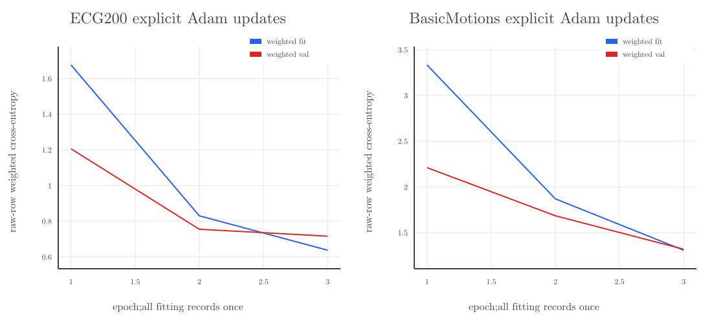
Restore raw-signal-only predictors and report every source class
Restore fresh stores with neutral channel normalization and copy the paired checkpoint. Forward receives only the observed raw waveform and architecture. Check saved/repeated logits,single/batch agreement and all20 learned plus2 normalization arrays unchanged. Replace one observed channel at a time with its unchanged fitting mean,and reverse the time axis. These controls show computation sensitivity,not causal feature importance or an accuracy test.
Report original class recall,balanced accuracy,macroF1,full confusion and unweighted NLL,plus source-class0 AUROC only for ECG. Class weights do not alter the evaluation denominator. Compare the saved SGD centroid and class-count prior,parameter-free standardized1NN,and untrained model on the same official test rows. No held-out input changes any fitted reference or normalization.
#include <dm/dm.hpp>
int main() {
namespace n = dm::nn;
namespace m = n::models;
n::set_num_threads(2);
std::filesystem::path cache;
if (const auto *p = std::getenv("DATAMUNGE_DATA_DIR"))
cache = p;
else if (const auto *p = std::getenv("XDG_CACHE_HOME"))
cache = std::filesystem::path(p) / "datamunge/datasets";
else
cache = std::filesystem::path(std::getenv("HOME")) / ".cache/datamunge/datasets";
std::filesystem::path root = cache / "ecg_sensor";
if (const auto *p = std::getenv("DATAMUNGE_SENSOR_DIR"))
root = p;
else {
dm::datasets::prepare_example_data("signals", cache.string());
root = cache / "ecg_sensor";
}
auto metric_layout = dm::graphics::RLayout::create(1, 2);
auto confusion_layout = dm::graphics::RLayout::create(1, 2);
auto control_layout = dm::graphics::RLayout::create(1, 2);
auto recall_layout = dm::graphics::RLayout::create(1, 2);
for (const std::string name : {"ECG200", "BasicMotions"}) {
const auto d = m::LoadSensor(root / name);
const auto &fit = d.pools[0];
const auto &test = d.pools[2];
const int k = d.config.classes, c = d.config.channels;
n::ParameterStore p(587), state(593);
{
n::NoGradGuard guard;
m::SensorCnn(p, state, n::zeros({1, 8, c}), d.config);
}
const auto checkpoint = n::load_npz("build/ecg_sensor_cnn_" + name + "_best.npz");
if (checkpoint.size() != p.size() + state.size())
return 1;
for (const auto &[key, value] : checkpoint) {
if (key.starts_with("p/"))
p.set(key.substr(2), value.clone());
else if (key.starts_with("s/"))
state.set(key.substr(2), value.clone());
else
return 1;
}
std::vector<n::Tensor> before;
for (const auto *store : {&p, &state})
for (const auto &v : store->parameters())
before.push_back(v.clone());
auto infer = [&](const n::Tensor &raw) {
n::NoGradGuard guard;
return m::SensorCnn(p, state, raw, d.config).logits;
};
n::Tensor saved, untrained;
for (const auto &[key, value] :
n::load_npz("build/ecg_sensor_cnn_" + name + "_outputs.npz")) {
if (key == "logits")
saved = value;
else if (key == "untrained")
untrained = value;
}
const auto logits = infer(test.signals);
const auto repeat = infer(test.signals);
const auto parity =
n::maximum(n::max(n::abs(logits - saved)), n::max(n::abs(logits - repeat)));
const auto one = n::slice_axis(test.signals, 0, 0, 1);
const auto single = infer(one);
const auto batch_error = n::max(n::abs(single - n::slice_axis(logits, 0, 0, 1)));
std::vector<n::Tensor> channel_changes;
for (int channel = 0; channel < c; ++channel) {
const auto mask = n::equal(n::arange(0, c), double(channel)).reshape({1, 1, c});
const auto changed =
n::where(mask, state.at("normalization/mean").reshape({1, 1, c}), one);
const auto delta =
n::mean(n::abs(infer(changed).to(n::DType::Float64) - single.to(n::DType::Float64)));
channel_changes.push_back(delta);
if (delta.item() <= 1e-7)
return 1;
}
const auto changes = n::stack(channel_changes, 0);
const auto reversal = n::sum(n::abs(infer(n::reverse(one, {1})).to(n::DType::Float64) -
single.to(n::DType::Float64)));
bool unchanged = true;
std::size_t index = 0;
for (const auto *store : {&p, &state})
for (const auto &v : store->parameters())
unchanged = unchanged && n::all(n::equal(before[index++], v)).item<bool>();
if (parity.item() > 2e-6 || batch_error.item() > 2e-6 || reversal.item() <= 1e-7 ||
!unchanged)
return 1;
std::print("\n{}:restore/repeat error {:.3g};single/batch {:.9g} within2e-6;{} "
"learned/state arrays unchanged:{};reversal change {:.9f}.\n",
name, parity.item(), batch_error.item(), before.size(), unchanged,
reversal.item());
std::print("{} observed-channel replacement changes:{}\n", name, changes);
n::Tensor centers, counts;
for (const auto &[key, value] : n::load_npz("build/ecg_sensor_cnn_" + name + "_sgd.npz")) {
if (key == "centers")
centers = value;
else
counts = value;
}
n::NoGradGuard guard;
const auto diff =
(n::expand_dims(test.signals.to(n::DType::Float64), 1) - n::expand_dims(centers, 0)) /
d.stddev.to(n::DType::Float64);
const auto centroid = (-n::mean(n::square(diff), {2, 3})).to(n::DType::Float32);
const auto prior =
n::log(counts / n::sum(counts)).to(n::DType::Float32) + n::zeros({test.size(), k});
const auto nearest = m::SensorReference(fit, test, d.stddev, k, false);
std::vector<n::Tensor> metrics;
std::vector<m::SensorScore> scores;
std::print(
"\n{}:source indices ECG[-1,+1] or "
"Basic[Standing,Running,Walking,Badminton].\n\n| predictor | accuracy | balanced "
"| macroF1 | unweighted NLL | source0AUROC | every source recall | every "
"true-row confusion cell |\n|---|---:|---:|---:|---:|---|---|---|\n",
name);
{
n::ConfusionMatrix current_counts(logits.size(1));
current_counts.add(test.labels, n::argmax(logits, 1));
n::save_npz("build/ecg_sensor_cnn_heldout_"+std::to_string(name == "ECG200" ? 0 : 1)+".npz",{{"truth",test.labels},{"logits",logits},{"counts",current_counts.to_tensor()}});
}
for (const auto &item :
std::vector<std::pair<std::string, n::Tensor>>{{"learned", logits},
{"untrained", untrained},
{"standard1NN", nearest},
{"SGD centroid", centroid},
{"SGD counts", prior}}) {
const auto score = m::ScoreSensor(item.second, test.labels, k);
scores.push_back(score);
const auto recall = n::from_vector(score.recall);
const auto cm = n::from_vector(score.confusion, {k, k});
if (k == 2)
std::print("| {} | {:.6f} | {:.6f} | {:.6f} | {:.6f} | {:.6f} | {} | {} |\n",
item.first, score.accuracy, score.balanced, score.macro_f1, score.nll,
score.auc0, recall, cm);
else
std::print("| {} | {:.6f} | {:.6f} | {:.6f} | {:.6f} | unavailable | {} | {} |\n",
item.first, score.accuracy, score.balanced, score.macro_f1, score.nll,
recall, cm);
metrics.push_back(n::from_vector(
std::vector<double>{score.accuracy, score.balanced, score.macro_f1}, {3}));
}
const auto measured = n::stack(metrics, 0);
const auto x = n::arange(0, 5).to_vector<double>();
auto plot = dm::graphics::RPlot::create();
plot.points(x, n::select(measured, 1, 0).to_vector<double>(), "accuracy", {37, 99, 235})
.points(x, n::select(measured, 1, 1).to_vector<double>(), "balanced", {220, 38, 38})
.points(x, n::select(measured, 1, 2).to_vector<double>(), "macroF1", {22, 163, 74})
.title(name + " held-out classification")
.x_label("predictor index (see caption)")
.y_label("equal-record/class fractions")
.y_limits(0, 1.2);
metric_layout.add(plot);
auto cm = n::plot_tensor_map(
n::reverse(n::from_vector(scores[0].confusion, {k, k}).to(n::DType::Float64), {0}), 0,
k == 2 ? 100 : 10);
cm.title(name + " learned confusion")
.x_label("predicted source class index")
.y_label("true source class0 at bottom");
confusion_layout.add(cm);
plot = dm::graphics::RPlot::create();
plot.bars(n::arange(0, c).to_vector<double>(), changes.to_vector<double>(),
"channel replaced", {147, 51, 234})
.title(name + " channel interventions")
.x_label("source channel replaced by fit mean")
.y_label("mean absolute logit change");
control_layout.add(plot);
plot = dm::graphics::RPlot::create();
plot.points(n::arange(0, k).to_vector<double>(), scores[0].recall, "learned recall",
{37, 99, 235})
.points(n::arange(0, k).to_vector<double>(), scores[3].recall, "SGD centroid",
{220, 38, 38})
.title(name + " original class recalls")
.x_label("source index (see caption)")
.y_label("true-class correct fraction")
.y_limits(0, 1.2);
recall_layout.add(plot);
}
std::filesystem::create_directories("figures");
confusion_layout.size(1100, 500).fit_panels().save_svg("build/ecg_sensor_cnn_confusion.svg");
std::filesystem::copy_file("build/ecg_sensor_cnn_confusion.svg",
"figures/ecg_sensor_cnn_confusion.svg",
std::filesystem::copy_options::overwrite_existing);
control_layout.size(1100, 500).fit_panels().save_svg("build/ecg_sensor_cnn_controls.svg");
std::filesystem::copy_file("build/ecg_sensor_cnn_controls.svg",
"figures/ecg_sensor_cnn_controls.svg",
std::filesystem::copy_options::overwrite_existing);
recall_layout.size(1100, 500).fit_panels().save_svg("build/ecg_sensor_cnn_recalls.svg");
std::filesystem::copy_file("build/ecg_sensor_cnn_recalls.svg",
"figures/ecg_sensor_cnn_recalls.svg",
std::filesystem::copy_options::overwrite_existing);
metric_layout.size(1100, 500).fit_panels().save_svg("build/ecg_sensor_cnn_metrics.svg");
}ECG200:restore/repeat error 0;single/batch 0 within2e-6;22 learned/state arrays unchanged:true;reversal change 0.996276774. ECG200 observed-channel replacement changes:float64[1] [0.150436]
ECG200:source indices ECG[-1,+1] or Basic[Standing,Running,Walking,Badminton].
| predictor | accuracy | balanced | macroF1 | unweighted NLL | source0AUROC | every source recall | every true-row confusion cell |
|---|---|---|---|---|---|---|---|
| learned | 0.410000 | 0.539062 | 0.347273 | 0.769382 | 0.784288 | float64[2] [1, 0.078125] | int32[2, 2] [[36, 0], [59, 5]] |
| untrained | 0.640000 | 0.500000 | 0.390244 | 2.762009 | 0.558160 | float64[2] [0, 1] | int32[2, 2] [[0, 36], [0, 64]] |
| standard1NN | 0.900000 | 0.879340 | 0.888592 | 0.413262 | 0.879340 | float64[2] [0.805556, 0.953125] | int32[2, 2] [[29, 7], [3, 61]] |
| SGD centroid | 0.750000 | 0.750000 | 0.738466 | 0.596660 | 0.884115 | float64[2] [0.75, 0.75] | int32[2, 2] [[27, 9], [16, 48]] |
| SGD counts | 0.640000 | 0.500000 | 0.390244 | 0.657579 | 0.500000 | float64[2] [0, 1] | int32[2, 2] [[0, 36], [0, 64]] |
BasicMotions:restore/repeat error 0;single/batch 0 within2e-6;22 learned/state arrays unchanged:true;reversal change 0.632114291. BasicMotions observed-channel replacement changes:float64[6] [0.0563701, 0.100093, 0.134089, 0.0417564, 0.0221466, 0.0222331]
BasicMotions:source indices ECG[-1,+1] or Basic[Standing,Running,Walking,Badminton].
| predictor | accuracy | balanced | macroF1 | unweighted NLL | source0AUROC | every source recall | every true-row confusion cell |
|---|---|---|---|---|---|---|---|
| learned | 0.275000 | 0.275000 | 0.174286 | 1.256781 | unavailable | float64[4] [0, 0.3, 0, 0.8] | int32[4, 4] [[0, 9, 0, 1], [0, 3, 0, 7], [0, 1, 0, 9], [0, 2, 0, 8]] |
| untrained | 0.250000 | 0.250000 | 0.100000 | 3.981576 | unavailable | float64[4] [0, 0, 1, 0] | int32[4, 4] [[0, 0, 10, 0], [0, 0, 10, 0], [0, 0, 10, 0], [0, 0, 10, 0]] |
| standard1NN | 0.500000 | 0.500000 | 0.428571 | 1.243668 | unavailable | float64[4] [1, 0.4, 0.6, 0] | int32[4, 4] [[10, 0, 0, 0], [5, 4, 1, 0], [4, 0, 6, 0], [6, 0, 4, 0]] |
| SGD centroid | 0.425000 | 0.425000 | 0.343468 | 1.311137 | unavailable | float64[4] [1, 0.2, 0.5, 0] | int32[4, 4] [[10, 0, 0, 0], [5, 2, 2, 1], [5, 0, 5, 0], [7, 0, 3, 0]] |
| SGD counts | 0.250000 | 0.250000 | 0.100000 | 1.386294 | unavailable | float64[4] [1, 0, 0, 0] | int32[4, 4] [[10, 0, 0, 0], [10, 0, 0, 0], [10, 0, 0, 0], [10, 0, 0, 0]] |
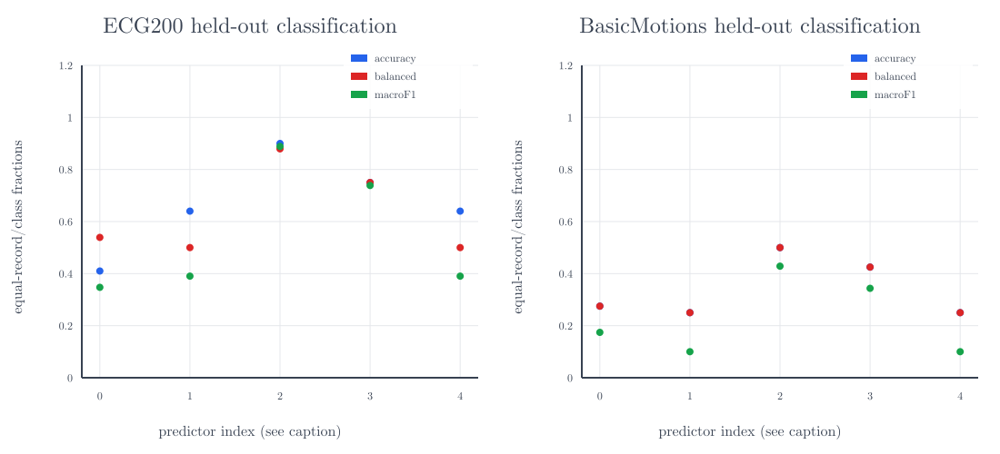
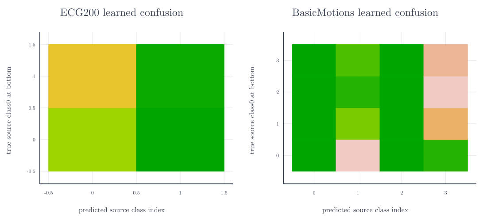
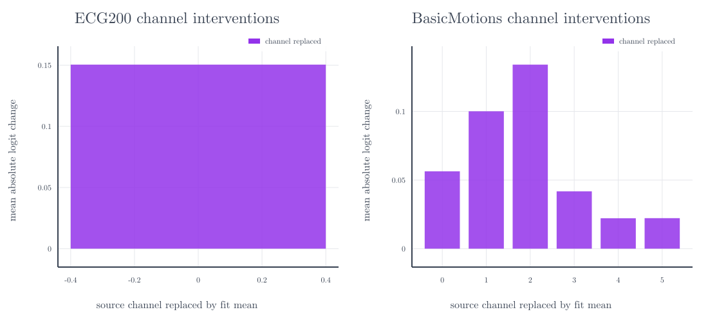
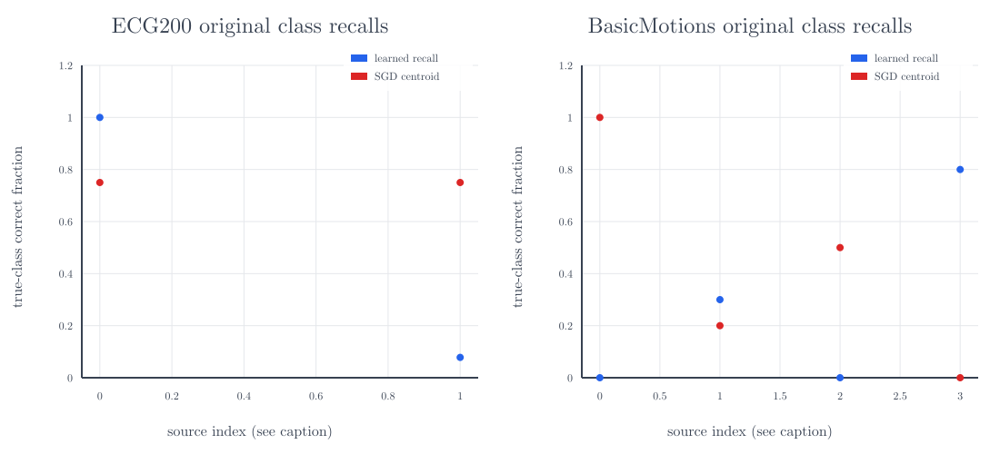
The selected ECG model reaches accuracy.410000,balanced recall.539062 and macroF1.347273. It gets all36 source-class0 records but only5/64class1 records correct. Its ranking AUROC.784288 does not rescue poor argmax classification. Standardized1NN reaches.900000 accuracy and SGD centroid .750000;the untrained/count prior reaches.640000.
BasicMotions accuracy/balanced recall is.275000,below1NN.500000 and SGD centroid.425000. Learned recalls are0/.3/0/.8:Standing and Walking both fail entirely. The report therefore claims no useful learned-model advantage despite improved fitting losses and nonzero channel sensitivity.
Independent validation and limits
Eight native tests verify all171tiny strided residual parameter coordinates against independent host finite differences,full graphs/every learned gradient for both sources,extreme weighted CE and every logit derivative,known imbalance/ confusion/F1/recall/AUROC ties,every original sample/ID/label/fitting statistic, every reference/metric value,explicit SGD centroid parity,input gradients and all channel interventions. Invalid std,missing class and undefined AUROC reject. Every public Doxygen example compiles/runs and the original two-dataset three-epoch workflow executes. Standalone headers and source oracles pass.
This is a small source-record-held-out teaching fit,not verified patient or participant separation. Original acquisition dependencies remain. Numerical sensitivity,source imbalance compensation and lower fitting loss do not establish useful held-out classification;all class outcomes remain visible.
Annotated confusion counts
The following program replots the current held-out evaluation counts printed in the
predictor tables above. It reproduces those recorded measurements without refitting
or re-evaluating the model. ConfusionMatrix::from_counts owns the integer tensor
counts and save_svg labels every cell. True class zero is the *top* row and
predicted class zero the left column. Counts are exact; colors use the observed
count range. Source class meanings remain those declared for the dataset above.
#include <dm/dm.hpp>
int main() {
namespace n = dm::nn;
std::filesystem::create_directories("build");
{
n::Tensor counts;
for (const auto &[key, value] : n::load_npz("build/ecg_sensor_cnn_heldout_1.npz"))
if (key == "counts") counts = value;
const auto matrix = n::ConfusionMatrix::from_counts(counts);
matrix.save_svg(
"build/ecg_sensor_cnn_confusion_api_1.svg",
{.title = "ecg sensor cnn / learned / 2", .cell_size = 52, .font_size = 13});
std::print("Current evaluation 2: 40 observations; accuracy {:.6f}.\n", matrix.accuracy());
}
{
n::Tensor counts;
for (const auto &[key, value] : n::load_npz("build/ecg_sensor_cnn_heldout_0.npz"))
if (key == "counts") counts = value;
const auto matrix = n::ConfusionMatrix::from_counts(counts);
matrix.save_svg(
"build/ecg_sensor_cnn_confusion_api_0.svg",
{.title = "ecg sensor cnn / learned / 1", .cell_size = 52, .font_size = 13});
std::print("Current evaluation 1: 100 observations; accuracy {:.6f}.\n", matrix.accuracy());
}
}Current evaluation 2: 40 observations; accuracy 0.275000. Current evaluation 1: 100 observations; accuracy 0.410000.
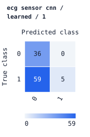
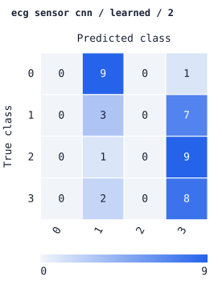
Regenerate adjacent views from this run
#include <dm/dm.hpp>
int main(){std::filesystem::copy_file("build/ecg_sensor_cnn_confusion.svg","build/export_ecg_sensor_cnn_confusion.svg",std::filesystem::copy_options::overwrite_existing);}#include <dm/dm.hpp>
int main(){std::filesystem::copy_file("build/ecg_sensor_cnn_confusion_api_1.svg","build/export_ecg_sensor_cnn_confusion_api_1.svg",std::filesystem::copy_options::overwrite_existing);}#include <dm/dm.hpp>
int main(){std::filesystem::copy_file("build/ecg_sensor_cnn_controls.svg","build/export_ecg_sensor_cnn_controls.svg",std::filesystem::copy_options::overwrite_existing);}#include <dm/dm.hpp>
int main(){std::filesystem::copy_file("build/ecg_sensor_cnn_inputs.svg","build/export_ecg_sensor_cnn_inputs.svg",std::filesystem::copy_options::overwrite_existing);}#include <dm/dm.hpp>
int main(){std::filesystem::copy_file("build/ecg_sensor_cnn_recalls.svg","build/export_ecg_sensor_cnn_recalls.svg",std::filesystem::copy_options::overwrite_existing);}Conclusion
The report keeps every fitted operation,original channel and source class visible. Genuine signal plots and complete held-out diagnostics constrain conclusions beyond fitting-loss reduction or numerical sensitivity. Paired saved normalization makes raw-signal-only inference reproducible.
References
- [Official ECG200 source](https://www.timeseriesclassification.com/description.php?Dataset=ECG200).
- [Official BasicMotions source and channel order](https://www.timeseriesclassification.com/description.php?Dataset=BasicMotions).
- [He et al.(2016),Deep Residual Learning for Image Recognition](https://arxiv.org/abs/1512.03385);the source teaching temporal architecture is an explicit variant,not the paper model.